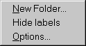
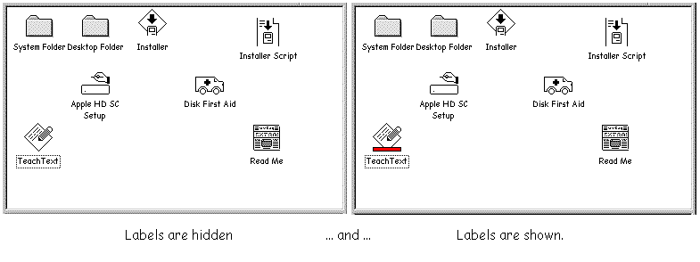
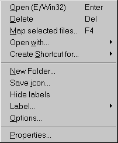
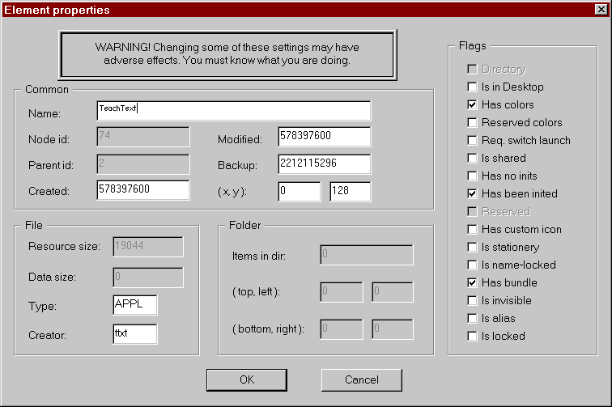
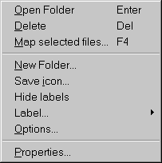

New Folder is used to create, huh, a new folder. It just prompts you the name of the folder and creates it.
Show/Hide labels toggles the label displaying on and off. Labels are show as superimposed colored pedestals. The picture below demonstrates the effect of displaying and hiding of the labels. The "TeachText" application is marked as "Hot" all the time.

If you have a file (as opposed to a folder) selected when you right-click,
the following menu pops up:

Open (xxx) tries to launch the selected application or document into the default emulator.
Delete prompts for a confirmation to delete the selected file(s) and if you agree, does it.
Map selected files... opens a dialog where you can define file type mappings.
Open with... opens another submenu where you can select into which emulator launch the selected document or application.
Create Shortcut for... opens a submenu where you select the target emulator. A shortcut will be placed on your Windows desktop. The Mac icon is extracted and saved to a subdirectory "Links" which is created in the HFVExplorer home directory. You can later on launch the application/document by double-clicking the desktop icon, HFVExplorer does not need to be running at that time. The helper application "vMacLink" is used to pass the information to the emulator, except in case of Executor (parameters are passed in command line or parameter file).
New Folder is described above.
Save icon... prompts for a file name and saves the Mac icon of the selected item. You can also take the icons from the "Links" subdirectory, but since you cannot create shortcuts to folders, this is the only way to extract folder icons.
Show/Hide labels is described above.
Label... opens a submenu to define or remove the label (color) of the selected files. The colors are not customizable, but standard Mac colors are used (Red=Hot, Orange=Essential etc.).
Options... opens the complex setup dialog which is described in detail elsewhere.
Properties... opens a dialog where you can tweak the internal HFS info of the selected file. A word of warning is in order: walk softly here. You can do some mediocre damage to your files by carelessly modifying these values. The most dangerous settings are disabled: you cannot convert a file to a folder, for example, which would be fatal. Below is the properties of "TeachText":

Usually, you only need to come here if you want to change the Type/Creator
info of the file. The name can also be changed here, but more easily by
pressing
the F2 (keyboard) key. "Created", "Modified" and "Backup" fields
are not decoded to a human readable form. You can still copy and paste
a value from some other item's properties.
If you have a folder (as opposed to a file) selected when you right-click, the following menu pops up:

Open Folder moves yo down in the directory structure into the selected folder. Usually you just hit "Enter" (keyboard) instead.
Delete prompts for a confirmation to delete the selected file(s) and if you agree, deletes the folder and its contents, including all subfolders and the files inside.
Map selected files... opens a dialog where you can define file type mappings.
New Folder is described above.
Save Icon... is described above.
Show/Hide labels is described above.
Label... is described above.
Options... opens the complex setup dialog which is described in detail elsewhere.
Properties.... is described above.
Instead of showing some file specific info, it displays folder specific
info.